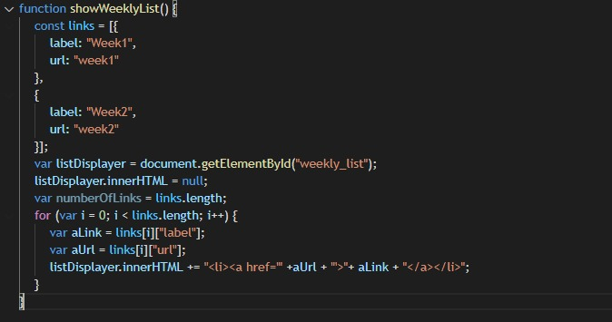
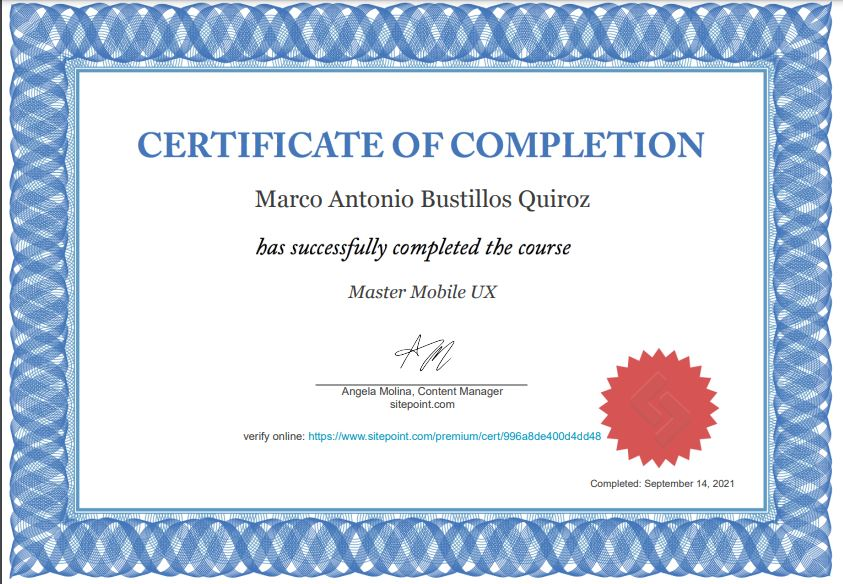

Remembering about JS
This week has been really interesting about this Course, in first time, it wasn't totally new for me, because for my daily job, I need to use some functions that we learned.
The Book "Doing Stuff with Web Things" is a really powerful tool if you want to remember, improve your foundations and begin with JS, because in every step it was telling you, why it's that code doing, so it's really great.
But, for me what really challenged me: "Create the portafolio". It's because I needed to use some of the fundations in order to make dinamic menus from an array.
So finally, I reviewed the code from the book, and make changes, and practices until it was working, so here you can see it:
Now, let’s talk about the Master Mobile UX, I really like sitepoint videos, they’re really interesting when you want to learn about a topic. It was really cool to remember about Mobile first, in my case I prefer to work in different ways according my projects. It’s interesting to see how the use of mobile devices have increased over the years, so I’m really amazed.
Finally, I got a great feeling about that I should Optimize and Minify my CSS files if I want that my websites can improve. Also, it’s really interesting the example about Facebook App with the menu bar at the bottom but in the actuality, it’s on the top “In my Android 10 device.”
